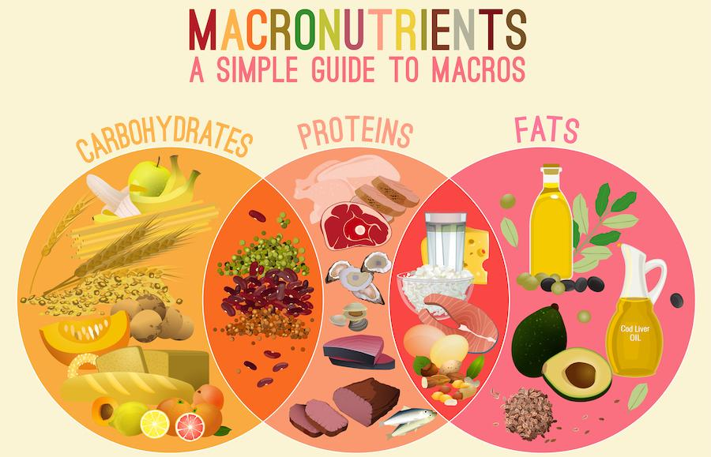

<!DOCTYPE html>
<meta http-equiv="content-type" content="text/html;charset=UTF-8" />
<head>
    <title>Impins la piet cu bara | HealthyZ</title>
    <meta property="og:site_name" content="Strength Coach Glasgow" />
    <meta http-equiv='cache-control' content='no-cache' />
    <meta http-equiv="Content-Type" content="text/html; charset=utf-8" />
    <meta name="viewport" content="width=device-width, initial-scale=1.0" />
    <link id="wsite-base-style" rel="stylesheet" type="text/css" href="../../cdn2.editmysite.com/css/sites9be7.css?buildTime=1561486651" />
    <link rel="stylesheet" type="text/css" href="../files/main_stylef74e.css?1561485939" title="wsite-theme-css" />
    <link href='http://fonts.googleapis.com/css?family=Montserrat:400,700&amp;subset=latin,latin-ext' rel='stylesheet' type='text/css' />
</head>
<body class="header-page  wsite-page-blog wsite-blog-post  full-width-body-off header-overlay-on alt-nav-on  wsite-theme-light">
    <div class="wrapper">

        <div class="banner-wrap">
            <div class="wsite-elements wsite-not-footer wsite-header-elements">
                <div class="wsite-section-wrap">
                    <div class="wsite-section wsite-header-section wsite-section-bg-image wsite-section-effect-parallax" style="height: auto;background-image: url(_/uploads/1/2/3/3/123320581/background-images/1565318044.html);background-repeat: no-repeat ;background-position: 50% 50% ;background-size: 100% ;background-color: transparent ;background-size: cover;background-attachment: fixed;">
                        <div class="wsite-section-content">
                            <div class="container">
                                <div class="banner">
                                    <div class="wsite-section-elements">
                                        <div class="wsite-spacer" style="height:50px;"></div>

                                        <h2 class="wsite-content-title">Antrenamente | Nutritie</h2>

                                        <div class="wsite-spacer" style="height:50px;"></div>
                                    </div>
                                </div>
                            </div>

                        </div>
                        <div class=""></div>
                    </div>
                </div>

            </div>

        </div>

        <div class="main-wrap">
            <div class="wsite-section-content">
                <div class="container">
                    <div class="wsite-elements wsite-not-footer">
                        <table id="blogTable" class="wsite-not-footer" style="border: 0; width: 100%; table-layout: fixed">
                            <tr>
                                <td valign="top">
                                    <div id="815468006538632597-blog" class="blog-body" style="float: left;">
                                        <div id="wsite-content">
                                            <div id="blog-post-205195184828542372" class="blog-post">

                                                <div class="blog-header">
                                                    <h2 class="blog-title">
					<a class="blog-title-link blog-lin">Macronutrientii</a>

			</h2>
                                                    <p class="blog-date">
                                                        <span class="date-text">
		2/25/2019
	</span>

                                                    </p>
                                                    <p class="blog-comments">

                                                    </p>
                                                </div>

                                                <div class="blog-separator">&nbsp;</div>

                                                <div class="blog-content">
                                                    <div>
                                                        <div class="wsite-image wsite-image-border-none " style="padding-top:10px;padding-bottom:10px;margin-left:0px;margin-right:0px;text-align:center">
                                                            <a>  </a>
                                                            <div style="display:block;font-size:90%"></div>
                                                        </div>
                                                    </div>
                                                    <div class="paragraph">
                                                    Macronutrienții și micronutrienții<br>
Toate alimentele și băuturile pe care le consumăm sunt compuse din șase macronutrienti si micronutrienti care sunt esențiali organismului nostru pentru producția de energie, pentru formarea și creșterea țesuturilor, pentru reglarea proceselor biologice, pentru prevenirea apariției deficiențelor și a bolilor degenerative. Acești șase nutrienți sunt glucidele, lipidele, proteinele, vitaminele, mineralele și apa, aceștia fiind indispensabili pentru buna funcționare a organismului. Deoarece organismul nostru nu este capabil să le producă în mod endogen în cantitățile zilnic necesare, aceștia trebuie furnizate prin alimentația noastră.<br><br>

În funcție de necesarul zilnic, nutrienții pot fi grupați în două categorii mari: macro- și micronutrienți. Din categoria macronutrienților fac parte glucidele, lipidele și proteinele, în timp ce vitaminele și mineralele se încadrează în categoria micronutrienților. Apa reprezintă o categorie în sine, cerințele zilnice variînd într-o proporție mare de la individ la individ, urmând să fie tratată în cadrul unui alt articol.<br><br>

Macronutrienți<br>
Glucidele, lipidele și proteinele fac parte din categoria macronutrienților deoarece au valoare energetică și sunt necesare organismului zilnic într-o cantitate mare.<br><br>

Glucidele<br>
Glucidele sunt compuși organici alcătuiți din atomi de carbon, hidrogen și oxigen, de unde vin și celelalte denumiri sub care sunt cunoscute – carbohidrați sau hidrați de carbon.<br>
Indiferent de mărime, toate glucidele după ce au fost ingerate sunt metabolizate și transformate în glucoză.<br>
În funcție de mărime, pot fi împărțite în 3 mari categorii:<br><br>

Monoglucide: unt cele mai simple forme de glucide, și nu pot fi hidrolizate în unități mai mici, fiind frecvent numite zaharuri simple (glucoză, fructoză).<br><br>

Oligoglucide: Sunt alcătuite din minim 2, maxim 9 resturi de monoglucide,  unite prin legături glicozidice. Cel mai cunoscut oligoglucid este zaharoza, care este alcătuită dintr-o moleculă de glucoză și o moleculă de fructoză.<br><br>

Poliglucide: Sunt alcătuite dintr-un lanț de 10 sau mai multe resturi de monoglucide, fiind denumite zaharuri complexe. În această categorie intră amidonul și fibrele alimentare.<br><br>

Rolul glucidelor în organism<br><br>

rol energetic (fiecare gram de glucide oxidat eliberează 4 kcal)<br>
rol structural (plastic)<br>
constituie substanțe de rezervă (sunt stocate în regnul vegetal sub formă de amidon, iar în regnul animal sub formă de glicogen în mușchi și în ficat)<br>
“cruță” proteinele (în caz de rezerve scăzute de glucide, proteinele sunt transformate în glucide)<br>
Sursele alimentare de glucide sunt reprezentate de produsele de origine vegetală (cereale, legume, fructe), cu excepția lactozei.<br><br>

Lipidele<br>
Sub denumirea de lipide se înteleg toate substanțele organice grase, insolubile în apă care se găsesc în alimente și în organism (uleiuri și grăsimi). Sunt constituite din acizi grași și glicerol. Cele mai răspândite lipide sunt trigliceridele (alcătuite din trei molecule de acizi grași și o moleculă de glicerol), alte tipuri fiind sterolii și fosfolipidele.<br>
Ca și glucidele și proteinele, lipidele sunt alcătuite din atomi de oxigen, carbon și hidrogen, dar raportul dintre oxigen și ceilalți doi compusși este mai scăzut, de aceea ele reprezintă o sursă mai concentrată de energie.<br>
În funcție de structura lor, pot fi:<br><br>

Acizi grași saturați: au în structura lor doar legături simple, de obicei se găsesc în produse de origine animală<br><br>

Acizi grași mononesaturați: au în structura lor o legătură dublă<br><br>

Acizi grași polinesaturați: au în structura lor două sau mai multe legături duble.<br>
Există două tipuri de acizi grași polinesaturați esențiali, acidul linolenic (omega 3) și acidul linoleic (omega 6), care nu pot fi sintetizați de către organism și trebuie furnizate prin alimentație.<br><br>

Chiar dacă unii denumesc acizii saturați ca acizi “răi”, iar acizii grași nesaturați ca acizi “buni”, ambele categorii sunt foarte importante, și ar trebuie să se regăsească în alimentația de zi cu zi.<br>
Acizii grați saturați sunt esențiali pentru producția de testosteron (1).<br>
Totodată, o meta-analiză a 21 de studii, care au urmărit 350000 de indivizi timp de mai mulți ani a concluzionat că nu există o relație clară între consumul de acizi grași saturați și o predispoziție mai ridicată la afecțiuni cardiovasculare (2)<br>
O altă neînțelegere s-a născut asupra faptului că colesterolul este rău pentru noi, deci nu mâncăm alimente care conțin colesterol, de exemplu gălbenușul de ouă, care de altfel este foarte bogat în vitamine B12, D, proteine și numeroase substanțe minerale. Nu există o relație clară între colesterolul dietetic și nivelul de colesterol din sânge (3)<br><br>

Rolul lipidelor în organism<br><br>


-rol energetic (prin oxidarea unui gram de lipide se eliberează 9 kcal)<br>
-rol de substanțe de rezervă (sub forma de țesut adipos)<br>
-rol structural (plastic) – se găsesc în componența membranei celulare (sub formă de fosfolipide)<br>
-rol transmiterea de semnale nervoase<br>
-rol în contracția musculară<br>
-rol transportor pentru vitaminele liposolubile (A, D, E, K)<br>
-sunt izolatori termici<br>
-conferă protecție mecanică organelor<br>
-Surse alimentare<br><br>

Lipide saturate: carne, unt, brânzeturi, lapte, alimente procesate (prăjituri, biscuiți etc)<br>
Lipide mononesaturate: măsline, arahide, avocado, nuci<br>
Lipide polinesaturate: pește gras, nuci, semințe oleaginoase<br><br>
Proteinele<br>
Proteinele sunt substanțe organice alcătuite din lanțuri de aminoacizi, fiind prezente în celulele tuturor organismelor vii.
Ele reprezintă singura sursă alimentară de azot pentru organism, azot care este folosit la sinteza proteinelor proprii organismului și a moleculelor cu azot care fac viața posibilă.<br>
Există 20 de aminoacizi care contribuie la formarea proteinelor, din care 9 sunt esențiali ( nu pot fi sintetizați de organism, și trebuie asigurate prin alimentație). Aminoacizii pot fi obținuți atât din surse alimentare cât și surse vegetale.<br><br>

O metodă des întâlnită de clasificare a proteinelor este în funcție de valoarea biologică, care este determinată în funcție de cantitatea și raportul de aminoacizi esențiali pe care le furnizează.<br>
Proteinele de origine animală (peștele, carnea, ouăle, laptele și produsele lactate) sunt considerate proteine cu valoare biologică ridicată, sau proteine complete, deoarece furnizează toți aminoacizii esențiali.<br>
Proteinele de origine vegetală (cerealele, semințele, nucii, legumele) sunt considerate proteine cu valoare biologică mai scăzută, sau proteine incomplete, deoarece nu conțin sau conțin în cantități reduse unul sau mai mulți aminoacizi esențiali, singura excepție fiind soia. Acest lucru se poate remedia prin combinarea a mai multor surse de proteine de origine vegetală, sau prin adăugarea de lapte și produse obținute din lapte la o proteină vegetală, pentru a obține o proteină completă.<br><br>

Rolul proteinelor în organism<br><br>

-producția de anticorpi pentru sistemul imunitar<br>
-producția de enzime care catalizează reacții chimice (absorbție, digestie, coagularea sângelui, contracție musculară)<br>
-rol structural (proteine contractile în țesutul muscular – miozina și actina, proteine fibroase în țesutul conjunctiv, păr, piele, unghii – colagenul, elastina, keratina)<br>
-rol de transport (albumina, hemoglobina)<br>
-componentă a hormonilor peptidici (insulina, hormonii tiroidieni, hormonul de creștere -HGH)<br>
-sursă de energie atunci când nivelul de glicogen este scăzut (prin procesul de gluconeogeneză)<br><br>
 

Surse alimentare de proteine complete<br><br>


De origine animală: carne, carne de pasăre, pește, ouă, lapte, lactate, brânzeturi<br>
De origine vegetală: soia, orez și fasole, unt de arahide pe pâine integrală, macaroane cu brânză, linte și pâine integrală, fulgi de ovăz cu lapte
Micronutrienți<br>
În categoria micronutrienților intră vitaminele și mineralele. Aceștia nu au valoare energetică și sunt necesari organismului într-o cantitate mică.<br><br>

Micronutrienti, macronutrienti si vitamine<br><br>

Vitaminele<br><br>
Vitaminele reprezintă o clasă de substanțe organice cu masă moleculară relativ mică, cu structuri chimice foarte variate, care sunt absolut necesare pentru organismele vii, ca compuși complementari ai proteinelor, lipidelor, glucidelor și substanțelor minerale existente în hrană, cu funcții catalitice.<br>
Vitaminele nu se sintetizează în organismul omului și al animalelor, sau sunt sintetizate de țesuturi și microflora intestinală în cantități mult prea mici pentru a acoperi activitatea normală umană.<br>
De aceea, pentru oameni sursa principală de vitamine o constituie plantele unde ele sunt sintetizate, acești compuși fiind preluați fie direct din produsele alimentare de origine vegetală, fie în mod indirect, din produsele de origine animală, unde vitaminele au fost preluate anterior din hrana vegetală.<br>
În aceste surse, ele pot exista în forma activă, sau în formă inactiva, de provitamine, din care în organism se formează vitaminele active.<br><br>

În funcție de solubilitatea lor, vitaminele se împart în două mari grupe:<br><br>

Vitamine liposolubile: această grupă cuprinde vitaminele solubile în lipide și solvenți organici, insolubili în apă: A,D,E,K<br><br>

Vitamine hidrosolubile: solubile în apă, totodată participă, sub formă de coenzime, la structura unor enzime: B1,B2,B3,B6,B9,B12,H,C,P<br><br>

Dacă nu sunt consumate în cantitățile necesare,  provoacă boli  și simptome specifice:<br><br>

Vitamina A: deficiența se manifestă prin vedere îngreunată în lumină slabă, și piele uscată, aspră.<br><br>

Vitamina C: carența poate duce la apariția scorbutului, căderea dinților, letargie, piele și păr uscat, fragilitate osoasă.<br><br>

Vitamina D: carența se manifestă prin fragilitate osoasă, sângerări gingivale.<br><br>

Surse alimentare de vitamine<br><br>

Vitamine liposolubile: morcovi, ardei, sfeclă, spanac, varză roșie, roșii, unt, brânză de vacă, lapte, lactate, gălbenuș de ou, semințe oleaginoase
Vitamine hidrosolubile: fulgi de cereale, cereale integrale, orez integral, ouă, lactate<br><br>
Mineralele
Mineralele sunt elemente nutritive anorganice (nu conțin carbon), necesare pentru buna funcționare a organismului.<br><br>

În funcție de cantitatea zilnică necesară, se împart în două mari categorii<br><br>

Macroelemente (minerale esențiale): calciu, magneziu, sodiu, potasiu, fosfor, clor, sulf<br>
Microelemente: fier, zinc, cupru, cobalt, iod, mangan, seleniu, molibden, fluor<br>
Rolul mineralelor în organism<br>

Calciul și fosforul contribuie la creșterea osoasă<br>
Sodiul și potasiul mențin echilibrul electrolitic<br>
Fierul contribuie la oxigenarea celulelor<br>
Cromul ajută la eliberarea energiei din macronutrienți<br>
Cuprul ajută la utilizarea fierului în organism<br>
Iodul contribuie la funcționarea creierului<br>
Magneziul menține sănătatea celulară<br>
Manganul contribuie la metabolizarea proteinelor și lipidelor<br>
Molibdenul este cofactor pentru o serie de enzime<br>
Surse alimentare de minerale: lapte, lactate, ouă, brânzeturi, legume (broccoli, spanac, morcovi, varză, ardei etc), fructe (caise, mere, pere, piersici, banane etc), semințe oleaginoase, nuci.<br><br></div>
                                                   <div class="paragraph"><u><em>Sfaturi recomandate pentru:<br /></em></u>Incepatori: &#10004;&#65039;
                                                        <br />Avansati: &#10004;&#65039;
                                                        <br />&nbsp;
                                                        <br /><u><em>Sfaturi!<br /></em></u>
                                                        <ul>
                                                            <li>In primul rand trebuie sa realizezi o incalzire generala de 10-15 min, iar mai apoi sa reazlizezi o incalzire specifica, pentru fiecare grupa folosita, intre 10-15 min.</li>
                                                            <li>Incepe cu greutati mici la inceput, ca mai apoi sa cresti treptat greutatea.</li>
                                                            <li>Mereu fii concentrat si focusat pe ceea ce ai de facut la sala, lasand la intrare toate probleme si frustrarile, deoarece acestea iti vor diminua antrenamentul</li>
                                                            <li>Mereu cand nu esti sigur de un anumit exercitiu, intreaba un membru din cardul salii, sunt sigur ca te va ajuta.</li>
                                                            <li>Nu te lasa intimidat de ceilalti.</li>
                                                        </ul>
                                                    </div>
                                                    <div class="wsite-youtube" style="margin-bottom:10px;margin-top:10px;">
                                                        <div class="wsite-youtube-wrapper wsite-youtube-size-auto wsite-youtube-align-center">
                                                            <div class="wsite-youtube-container">
                                                                <iframe width="560" height="315" src="https://www.youtube.com/embed/F6wQvUhYQZw" frameborder="0" allow="accelerometer; autoplay; encrypted-media; gyroscope; picture-in-picture" allowfullscreen></iframe>
                                                                <br>
                                                                <br>
                                                                <iframe width="560" height="315" src="https://www.youtube.com/embed/Sacfv62DxZk" frameborder="0" allow="accelerometer; autoplay; encrypted-media; gyroscope; picture-in-picture" allowfullscreen></iframe>
                                                                <br>
                                                                <br>
                                                            </div>
                                                        </div>
                                                    </div>
                                                    <div class="paragraph">Mai sus am atasat cateva video-uri explicative.
                                                        <br>
                                                    </div>
                                                    <h2 class="wsite-content-title" style="text-align:center;">Doresti mai multe informatii sau ajutor?</h2>
                                                    <div>
                                                        <div class="wsite-multicol">
                                                            <div class="wsite-multicol-table-wrap" style="margin:0 -15px;">
                                                                <table class="wsite-multicol-table">
                                                                    <tbody class="wsite-multicol-tbody">
                                                                        <tr class="wsite-multicol-tr">
                                                                            <td class="wsite-multicol-col" style="width:42.134831460674%; padding:0 15px;">
                                                                                <div>
                                                                                    <div class="wsite-image wsite-image-border-none " style="padding-top:10px;padding-bottom:10px;margin-left:0px;margin-right:0px;text-align:center"> 
                                                                                        <div style="display:block;font-size:90%"></div>
                                                                                    </div>
                                                                                </div>
                                                                            </td>
                                                                            <td class="wsite-multicol-col" style="width:57.865168539326%; padding:0 15px;">
                                                                                <div class="paragraph"><strong style="color:rgb(42, 42, 42)">Cu ce te putem ajuta?</strong>
                                                                                    <ol style="color:rgb(42, 42, 42)">
                                                                                        <li>Poti beneficia de un antrenor personal</li>
                                                                                        <li>Program nutritional customizat pentru tine</li>
                                                                                        <li>Sfaturi si participari la diferite dezbateri din cadrul sportului</li>
                                                                                        <li>Poti devenii un afiliat / partener</li>
                                                                                    </ol>
                                                                                </div>
                                                                            </td>
                                                                        </tr>
                                                                    </tbody>
                                                                </table>
                                                            </div>
                                                        </div>
                                                    </div>
                                                    <div class="paragraph"><span style="color:rgb(42, 42, 42)">Daca esti client nou, poti beneficia de diferite reduceri, la programe de antrenament si nutritionale, sau aducand un nou membru, poti castiga diferite produse promotionale.</span><span style="color:rgb(42, 42, 42)">&#8203;&#8203;</span></div>
                                                    <div style="text-align:center;">
                                                        <div style="height: 10px; overflow: hidden;"></div>
                                                        <div style="height: 10px; overflow: hidden;"></div>
                                                    </div>

                                                </div>

                                                <div class="blog-comments-bottom">

                                                </div>

                                                <div class="blog-post-separator"></div>
                                            </div>

                                            <a name="comments" id="comments"></a>
                                            <div id="commentArea">
                                                <div class="blog-comment-area">

                                                    <div id="commentText">
                                                        <!-- lastComment -->
                                                        <div id="lastComment"> </div>
                                                    </div>
                                                    <br />
                                                    <div class="blog-notice-comments-closed">Comments are closed.</div>

                                                </div>

                                            </div>

                                        </div>
                                    </div>

                                </td>

                            </tr>
                        </table>

                    </div>
                </div>
            </div>
        </div>

        <div class="footer-wrap">
            <div class="footer">
                <div class='wsite-elements wsite-footer'>
                    <div>
                        <div class="wsite-multicol">
                            <div class="wsite-multicol-table-wrap" style="margin:0 -25px;">
                                <table class="wsite-multicol-table">
                                    <tbody class="wsite-multicol-tbody">
                                        <tr class="wsite-multicol-tr">
                                            <td class="wsite-multicol-col" style="width:50.21765051138%; padding:0 25px;">

                                                <div>
                                                    <div class="wsite-multicol">
                                                        <div class="wsite-multicol-table-wrap" style="margin:0 -15px;">

                                                        </div>

                                                        <div>
                                                            <div style="height: 20px; overflow: hidden; width: 100%;"></div>
                                                            <hr class="styled-hr" style="width:100%;"></hr>
                                                            <div style="height: 20px; overflow: hidden; width: 100%;"></div>
                                                        </div>

                                                        <div>
                                                            <div class="wsite-multicol">
                                                                <div class="wsite-multicol-table-wrap" style="margin:0 -15px;">
                                                                    <table class="wsite-multicol-table">
                                                                        <tbody class="wsite-multicol-tbody">
                                                                            <tr class="wsite-multicol-tr">
                                                                                <td class="wsite-multicol-col" style="width:50%; padding:0 15px;">

                                                                                    <div class="paragraph" style="text-align:left;"><font size="1">&copy; COPYRIGHT 2019. ALL RIGHTS RESERVED.</font></div>

                                                                                </td>
                                                                                <td class="wsite-multicol-col" style="width:50%; padding:0 15px;">

                                                                                    <div>
                                                                                        <div id="912742856326153445" align="right" style="width: 100%; overflow-y: hidden;" class="wcustomhtml">Website Design by <a href="#" rel="nofollow">FreakZ</a></div>
                                                                                    </div>
                                                                                </td>
                                                                            </tr>
                                                                        </tbody>
                                                                    </table>
                                                                </div>
                                                            </div>
                                                        </div>
                                                    </div>
                                                </div>
                            </div>
                        </div>
</body>

</html>